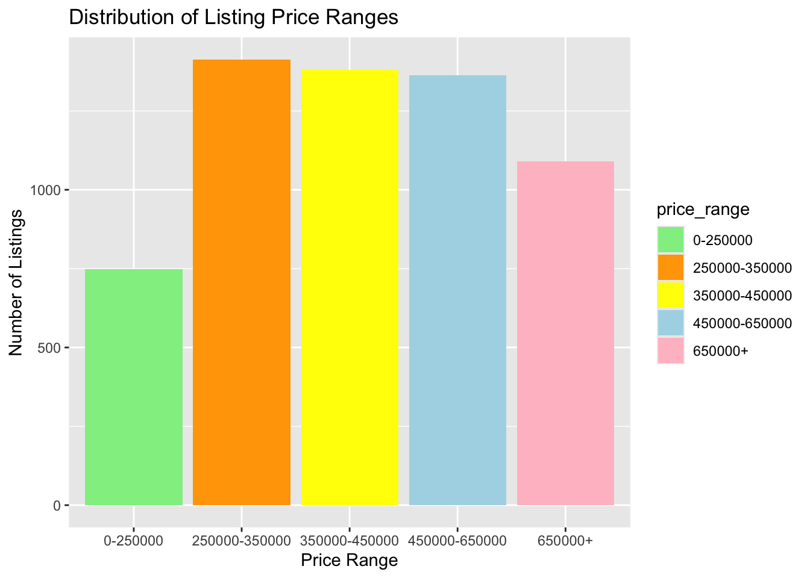
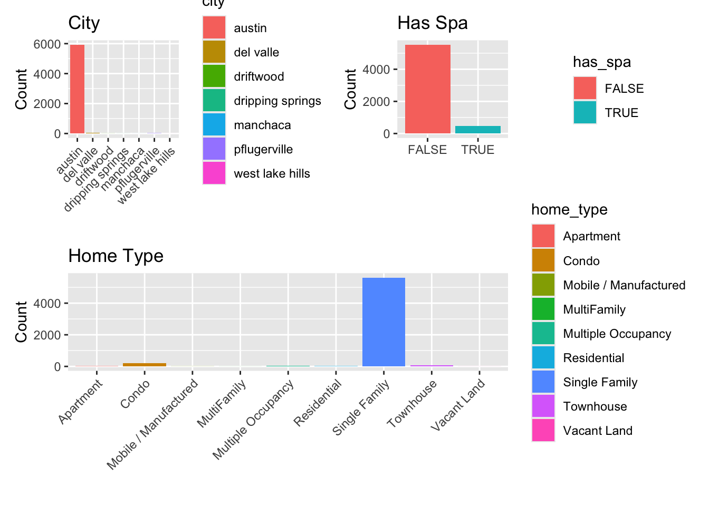
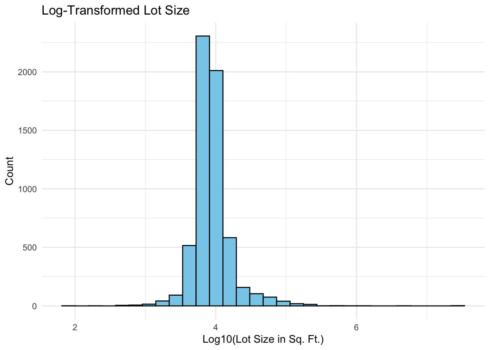
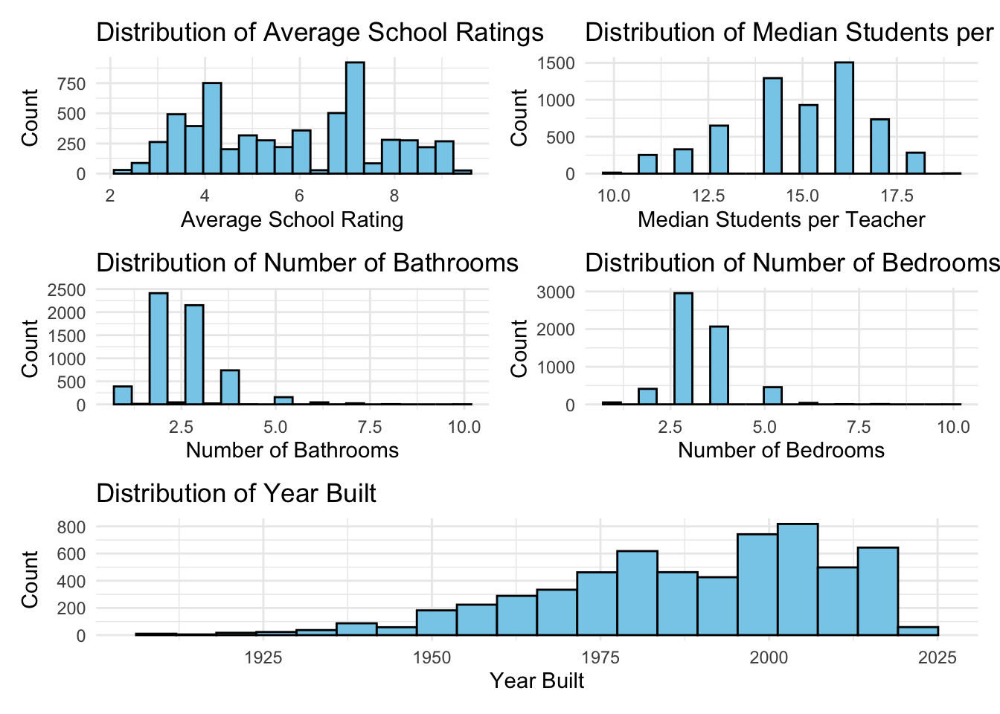
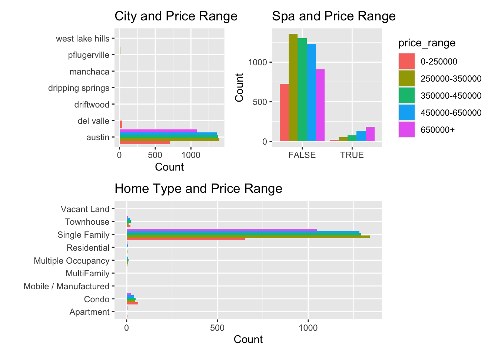
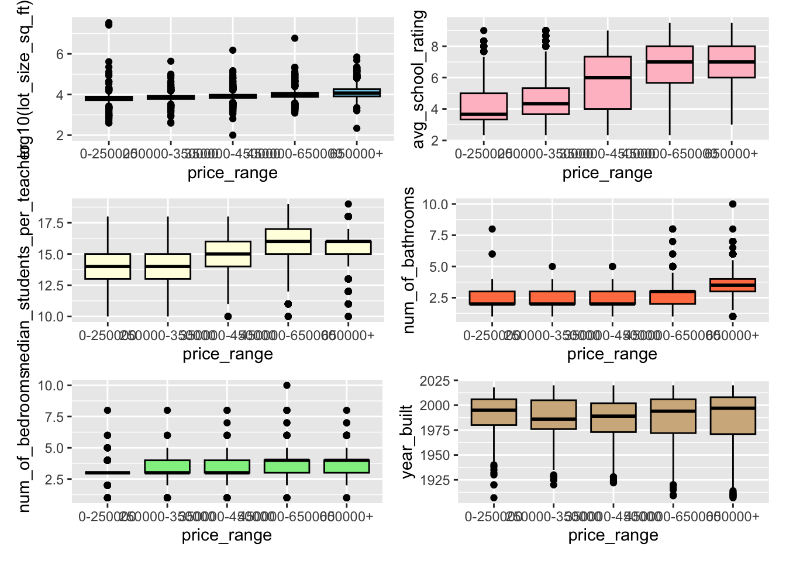

library(tidyverse)
library(tidymodels)
library(kableExtra)
library(patchwork)
data <- read_csv("mat-434-zillow-classification-challenge-sp-25 2/data.csv")
comp <- read_csv("mat-434-zillow-classification-challenge-sp-25 2/comp.csv")
names(data) <- janitor::make_clean_names(names(data))
data <- data %>%
mutate(price_range = factor(price_range))
set.seed(304)
split <- initial_split(data, prop = 0.8, strata = price_range)
train <- training(split)
test <- testing(split)Competition Assignment
Statement of Purpose
What really determines a home’s list price? This project aims to build a predictive model that forecasts the price range of Zillow listings based on key property features. Designed for real estate professionals, data analysts, and market researchers, this model uncovers hidden pricing patterns, offering valuable insights into market trends. By leveraging data-driven predictions, we empower buyers, sellers, and industry experts to make more informed decisions in an ever-evolving real estate landscape.
Executive Summary
Introduction
Exploratory Data Analysis
The original data set on the Zillow listings contained 7498 listings and 16 features (variables). We can see the first-few listings’-worth of data printed out below.
data |>
head() |>
kable() |>
kable_styling(full_width = FALSE)| id | city | description | home_type | latitude | longitude | garage_spaces | has_spa | year_built | num_of_patio_and_porch_features | lot_size_sq_ft | avg_school_rating | median_students_per_teacher | num_of_bathrooms | num_of_bedrooms | price_range |
|---|---|---|---|---|---|---|---|---|---|---|---|---|---|---|---|
| 1 | austin | 7300 Annette Cv, Austin, TX 78724 is a single family home that contains 1,419 sq ft and was built in 2007. It contains 2 bedrooms and 3 bathrooms. | Single Family | 30.28529 | -97.64630 | 1 | FALSE | 2007 | 0 | 6795.0 | 3.666667 | 11 | 3 | 2 | 250000-350000 |
| 2 | austin | Extravagant and luxurious 5 bedroom, 4.5 bath property in the beautiful Tarrytown neighborhood. The high-ceilinged main level is window-lined throughout with a clear view of the impressive fenced-in backyard space. In the kitchen custom designed by a French chef, there’s an abundance of drawer space for easy access to all cooking tools. The spacious living area includes a gas fireplace plus indoor/outdoor surround sound speakers. Upstairs the master bedroom has a unique spare space for use as either an office or large spare closet. Each bedroom has soundproof walls between – a perfect floor plan for large families. Use the 5th bedroom as a guest space or even a multi-purpose room. The massive outdoor patio has a fully functioning kitchen, includes an entrance to an indoor half bath, and overlooks the tech-enhanced heated pool. Pool includes a motorized cover that prevents children from entering when unattended – plus, easy maintenance as it keeps out rain and leaves. | Single Family | 30.29841 | -97.77605 | 2 | TRUE | 2015 | 0 | 8276.0 | 7.000000 | 16 | 5 | 5 | 650000+ |
| 3 | austin | HIGH RENTABLE AREA! Beautifully kept duplex located minutes away from great restaurants, shopping, and easy access to I-35 and HWY 183! Each unit features 3 bed 2 bath with an amazing floor plan! | Multiple Occupancy | 30.32740 | -97.69390 | 1 | FALSE | 1967 | 0 | 8886.0 | 3.333333 | 15 | 4 | 6 | 0-250000 |
| 4 | austin | Great house in the heart of downtown East Austin. Completely remodeled single family home sitting on the back lot 1902 Garden Street just off Chicon. Updated kitchen with stainless appliances, granite counter top, bamboo and vinyl plank flooring. 9 blocks from downtown 5 blocks from Lady Bird Lake. Access through rear on publicly maintained alley with both walking gate and sliding gate to parking area. In the middle of one of the hottest areas on the East side | Single Family | 30.25436 | -97.72549 | 0 | FALSE | 1920 | 0 | 2178.0 | 4.000000 | 11 | 1 | 1 | 250000-350000 |
| 5 | austin | FOR SALE BY OWNER AND FULLY RENOVATED: Wake up each morning to serene canyon, greenbelt views from this completely remodeled home on a large lot in coveted River Place. With no home behind the house, it's very quiet. Walk to Woodlands Park and tennis facilities on Lake Austin, hiking via the River Place Nature Trail and River Place Country Club. H-E-B grocery shopping and restaurants minutes away included Ski Shores on Lake Austin. Home feeds into the award-winning Vandergrift High School in Leander ISD. Five bedrooms with the master and one guest room on the first floor. Four full bathrooms. 3,615 sq ft. Two living areas plus large office that could also be a third living area. Dining room plus eat-in kitchen. All-new modern window shades. Three-car garage. BigAss smart ceiling fans, Ecobee smart thermostats for updated Trane A/C, Philips smart lights and LeGrand switches & nightlights. Two large walk-in Texas basements plus attic storage in the house and garage. Two water tanks and two HVAC systems in the attic. Fully remodeled 2019-2020. Painted inside and outside. New roof in 2016. Pool, patio and pergola CAD plans included. 2019 taxes were $16,369. HOA is $22 a month. We need to move closer to our elderly parents. Our loss is your gain. We just finished this amazing remodel, and the design continues to be featured in national magazines. If you would like to see thi | home, call 502-938 | 4800. It | s FOR SALE | BY OWNER. Than | you. |S | ngle Family | | 30.36166| -97.85528| | 0|FALSE | | 1999| | 0| | 12196.8| | 7.000000| | |
| 6 | austin | Under market pricing!!! Owner wants to move it quickly! He is willing to go well under market value for December contract! This 3 bedroom condo is located right off Payton Gin Rd about 1/2 mile from 183. It's part of the well sought after Orange Grove Condominium community. It is close to MoPac/I 35 and the Domain Shopping area. Recently upgraded with newer paint, laminate and vinyl flooring. Recent carpet replaced in the Master Bedroom and the hall/stairs as well. | Condo | 30.36236 | -97.71042 | 0 | FALSE | 1974 | 0 | 400.0 | 4.000000 | 14 | 2 | 3 | 0-250000 |
The Zillow listings data was split into a collection of 5996 training observations and 1502 test observations to validate our final model’s performance. Care was taken to ensure that properties from each price range category are proportionally represented across the training and test sets, preserving the overall distribution of home prices.
Since our goal is to understand and gain insight as to what the price range of a Zillow listing is, we will start by taking a closer look at the distribution of the different price ranges.
train %>%
ggplot() +
geom_bar(aes(x = price_range, fill = price_range)) +
scale_fill_manual(values = c("0-250000" = "lightgreen", "250000-350000" = "orange",
"350000-450000" = "yellow", "450000-650000" = "lightblue",
"650000+" = "pink")) +
labs(title = "Distribution of Listing Price Ranges",
x = "Price Range",
y = "Number of Listings")
We will now look at the distribution of the remaining categorical variables.
p1 <- train %>%
ggplot() +
geom_bar(aes(x = city, fill = city)) +
labs(
title = "City",
x = "",
y = "Count"
) +
theme(axis.text.x = element_text(angle = 45, hjust = 1))
p2 <- train %>%
ggplot() +
geom_bar(aes(x = home_type, fill = home_type)) +
labs(
title = "Home Type",
y = "Count",
x = ""
) +
theme(axis.text.x = element_text(angle = 45, hjust = 1))
p4 <- train %>%
ggplot() +
geom_bar(aes(x = has_spa, fill = has_spa)) +
labs(
title = "Has Spa",
x = "",
y = "Count"
)
(p1 + p4) / (p2)
The visual analysis of the Zillow listings dataset reveals several key trends. The majority of listings are concentrated in Austin, with very few properties available in other cities. Additionally, nearly all listings do not have a spa, making it a relatively uncommon feature. In terms of home types, most properties are Single Family homes, while condos and townhouses make up only a small portion of the dataset. Importantly, we confirmed that none of the plots contain missing values, ensuring that the displayed data is complete and reliable for further analysis.
Let’s continue on to view the distributions of the numerical predictors available to us. We’ll take a look at the distribution of (lot_size_sq_ft), (avg_school_rating), (median_students_per_teacher), (num_of_bathrooms), (num_of_bedrooms), and (year_built).
train %>%
ggplot() +
geom_histogram(aes(x = log10(lot_size_sq_ft)), color = "black",
fill = "skyblue", bins = 30) +
labs(
title = "Log-Transformed Lot Size",
x = "Log10(Lot Size in Sq. Ft.)",
y = "Count"
) +
theme_minimal()
We applied a log transformation to the lot_size_sq_ft variable to address its right-skewed distribution, where most properties had relatively small lot sizes, but a few extreme values distorted the scale. By using (log10(lot_size_sq_ft)), we compressed the range of values, making the data more symmetrical and normally distributed. This transformation improves interpretability, allowing us to better analyze trends and relationships. The resulting normal distribution indicates that the transformation successfully relaxed the impact of outliers, making (lot_size_sq_ft) more suitable for statistical modeling and predictive analysis.
n1 <- train %>%
ggplot() +
geom_histogram(aes(x = avg_school_rating), color = "black", fill = "skyblue", bins = 20) +
labs(title = "Distribution of Average School Ratings",
x = "Average School Rating", y = "Count") +
theme_minimal()
n2 <- train %>%
ggplot() +
geom_histogram(aes(x = median_students_per_teacher), color = "black", fill = "skyblue", bins = 20) +
labs(title = "Distribution of Median Students per Teacher",
x = "Median Students per Teacher", y = "Count") +
theme_minimal()
n3 <- train %>%
ggplot() +
geom_histogram(aes(x = num_of_bathrooms), color = "black", fill = "skyblue", bins = 20) +
labs(title = "Distribution of Number of Bathrooms",
x = "Number of Bathrooms", y = "Count") +
theme_minimal()
n4 <- train %>%
ggplot() +
geom_histogram(aes(x = num_of_bedrooms), color = "black", fill = "skyblue", bins = 20) +
labs(title = "Distribution of Number of Bedrooms",
x = "Number of Bedrooms", y = "Count") +
theme_minimal()
n5 <- train %>%
ggplot() +
geom_histogram(aes(x = year_built), color = "black", fill = "skyblue", bins = 20) +
labs(title = "Distribution of Year Built",
x = "Year Built", y = "Count") +
theme_minimal()
(n1 + n2) / (n3 + n4) / (n5)
The top-left graph reveals a bimodal distribution in average school ratings, with peaks around 4.5 and 7, indicating that ratings tend to cluster around these two values rather than being evenly distributed. This pattern suggests a possible bias in the data, likely influenced by an underlying factor such as differences between public and private schools. The top-right graph exhibits a left-skewed distribution, suggesting that most schools have higher student-to-teacher ratios. In contrast, the middle-left and middle-right graphs are both right-skewed, indicating that most listings have a lower number of bathrooms (around 2-3) and bedrooms (around 3-4), respectively. Lastly, the bottom graph is left-skewed, suggesting that a majority of the homes in the dataset are relatively new, built between 1950 and 2020.
Now that we understand the individual distributions of the variables, its time to look at how these predictors are associated with out response variable (price range). We’ll begin by looking for associations between price range and the categorical variables.
p_city <- train %>%
ggplot() +
geom_bar(aes(y = city,
fill = price_range),
position = "dodge",
show.legend = FALSE) +
labs(title = "City and Price Range",
x = "Count",
y = "")
p_spa <- train %>%
ggplot() +
geom_bar(aes(x = has_spa,
fill = price_range),
position = "dodge") +
labs(title = "Spa and Price Range",
x = "",
y = "Count")
p_hometype <- train %>%
ggplot() +
geom_bar(aes(y = home_type,
fill = price_range),
position = "dodge",
show.legend = FALSE) +
labs(title = "Home Type and Price Range",
x = "Count",
y = "")
(p_city + p_spa) / (p_hometype)
The top-left graph reveals that the majority of listings are located in Austin, with most falling within the three middle price ranges, rather than at the extreme high or low ends. The top-right graph indicates that homes without a spa also tend to cluster within these middle price ranges, suggesting that spas are not a defining factor in mid-range home pricing. However, when a home does have a spa, it is most likely to be in the highest price range, with the likelihood decreasing as the price range drops. The bottom graph confirms that Single Family homes are the most common property type, again showing a strong presence in the three middle price ranges, while condos are the second most common and are predominantly found in the lowest price range. This suggests that condos are generally more affordable, whereas spa-equipped homes are more likely to be luxury properties.
Now we’ll consider how the numerical features may be associated with the price_range of the listings.
m1 <- train %>%
ggplot() +
geom_boxplot(aes(x = price_range, y = log10(lot_size_sq_ft)), color = "black",
fill = "skyblue")
m2 <- train %>%
ggplot() +
geom_boxplot(aes(x = price_range, y = avg_school_rating), color = "black",
fill = "pink")
m3 <- train %>%
ggplot() +
geom_boxplot(aes(x = price_range, y = median_students_per_teacher), color = "black",
fill = "lightyellow")
m4 <- train %>%
ggplot() +
geom_boxplot(aes(x = price_range, y = num_of_bathrooms), color = "black",
fill = "coral")
m5 <- train %>%
ggplot() +
geom_boxplot(aes(x = price_range, y = num_of_bedrooms), color = "black",
fill = "lightgreen")
m6 <- train %>%
ggplot() +
geom_boxplot(aes(x = price_range, y = year_built), color = "black",
fill = "tan")
(m1 + m2) / (m3 + m4) / (m5 + m6)
The top-left graph reveals that larger lot sizes are associated with higher price ranges. Since the data was skewed, a log transformation (log10(lot_size_sq_ft)) was applied to improve visualization and highlight differences more clearly. The top-right graph indicates that higher-priced homes tend to have higher average school ratings, suggesting that expensive properties are located in areas with better schools.
The middle-left graph shows little variation in student-to-teacher ratios across price ranges, with the highest ratio appearing in the second-highest price category. This suggests that class sizes remain relatively consistent regardless of home price. The middle-right graph demonstrates that the number of bathrooms increases with price, as indicated by a rising median line across price ranges, confirming that bathroom count is strongly correlated with home price.
The bottom-left graph further supports this trend, showing that homes with more bedrooms are generally priced higher. Lastly, the bottom-right graph suggests that newer homes tend to be in higher price ranges, as more expensive listings have higher median construction years, indicating that recently built homes are more likely to be valued at a premium.
As a result of this exploratory analysis, we have identified several key insights that will inform our model construction phase. Firstly, home listings are not evenly distributed across price ranges, with most properties falling within the middle price categories rather than the extreme high or low ends. Many of the numerical features, such as lot size and number of bathrooms, exhibit strong right-skewness, requiring transformations like log scaling to improve interpretability. The variable most strongly associated with higher price ranges appears to be lot size, as larger properties tend to be more expensive. Other factors, such as average school rating, number of bedrooms, and presence of a spa, also show notable correlations with price but with varying degrees of impact.